{kind=link}
 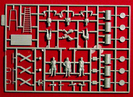
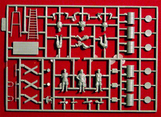
{kind=link}
You may click on the above pictures to view larger images
ICM 1/48 Scale Yak 7B Interceptor with Crew
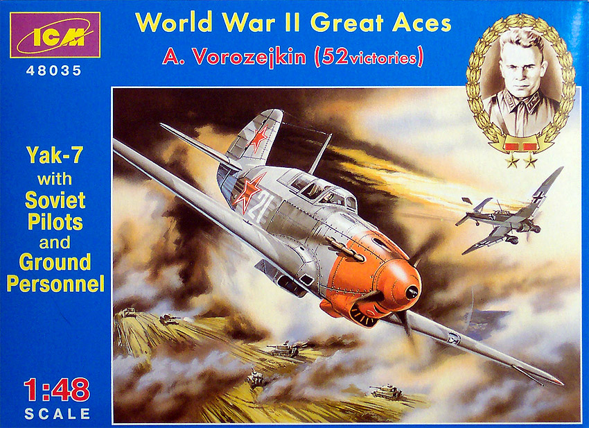
Kit #48035
MSRP $17.98
Images and text Copyright � 2004 by Matt Swan
Developmental Background
Alexander Sergeyivich Yakovlev was responsible for the development on an entire series of fighter aircraft that began with the Yak-1 also known as the I-26. The Yak 1,3 and 4 were known as �light fighters� and were used extensively as trainers. The first Yak-1 began development in 1939 as a two-seat, unarmed and underpowered trainer. The designed showed good promise and was developed into the armed advanced trainer version, Yak-7A. By the end of 1941, about 60 Yak-7A fighters had been built with two ShKAS 7.62 millimeter machine guns in the cowling, a ShVAK 20 millimeter cannon firing through the prop spinner, and racks for six RS-82 rockets. Its flight performance was less maneuverable than the trainer version and it was still underpowered, so much so that the rocket provisions were removed.
Improvements continued, leading to the introduction of the "Yak-7B" in the spring of 1942. The 7B was originally powered by the M-105PA engine and then the M-105PF engine, and also featured more powerful armament, retaining the ShVAK 20 millimeter cannon but switching the two ShKAS 7.62 millimeter machine guns in the cowling for two UBS 12.7 millimeter machine guns. Given the high rate of fire of these weapons, this gave the 7B good firepower. The Yak-7B was also fitted with an RSI-4 radio, the rear canopy replaced with a plywood hood that hinged open to the side and had a number of aerodynamic improvements such as improved engine intakes that improved high altitude performance. Although about 220 pounds more than the Yak-7A, due to the improved engine and aerodynamics, the Yak-7B had slightly better performance. Launch rails for six RS-82 rockets were put back into the design and racks for two 100-kilogram bombs were also added. The rocket rails were quickly removed from production as they degraded performance too much, but the bomb racks were retained.
The Yak-7B was used with great effectiveness by several accomplished Russian pilots like twice Hero of the Soviet Union, Major Arsenji Vorozejkin who was credited with 52 aerial victories or Nataliya Zemanova, one of the many women who flew in combat with the VVS. Her squadron (519 IAP) flew red-nosed Yak-7s and on 18 July 1943 over Prokhorovka Zemanova's squadron of 11 Yak-7Bs fought off no fewer than 65 enemy fighters. One Yak was lost and nine Messerschmitts were claimed shot down. A total of 6,399 Yak-7s of all types were built before production ended in early 1943, with more than 5,000 of this total being Yak-7Bs.
The Kit
The history of the ICM company is somewhat convoluted. They came on strong out of Kiev in the Ukraine in 1994 with some very well detailed kits for amazingly low prices. One of the most unusual features of their kits was the inclusion of complete engines and hoods that actually fit. By 2001 the company had lost its momentum becoming part of the closed stock company Alanger with offices in Belmont, Massachusetts and in Moscow, Russia. They have made production agreements with Revell of Germany and are once again producing models mostly in the 1/72 range. However, many of the original 1/48 scale aircraft are still readily available and several of the original 1/48 scale offerings have been repackaged to include ground crews and support equipment as in the �Aces� series or in groups of three aircraft representing specific squadrons during the Great Patriotic War.
This kit is part of that �Aces� series and focuses on Major Arsenji Vorozejkin. It comes in a mid-size box with nicely done box-art. All the ICM kits feature end-opening boxes, which I find to be a slight handicap during construction. I much prefer to have a top opening box in which to store my loose model parts while I work on a project. Inside the box we have five trees of parts, four of which are devoted to the aircraft and one is focused on the crew figures and support equipment. This trees of crew figures is pretty nice giving the modeler a nice selection of Russian figures to work with along with a cool field table, a big bench vise, some buckets, a couple of Jerry cans, a big A-frame ladder and some oil drums � all good things to have around for diorama building. Most of the figures feature separate arms allowing some flexibility in positioning.
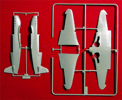
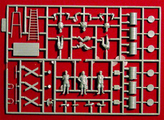
You may click on the above pictures to view larger images
The trees for the aircraft include many pieces that are not for this specific model. It is very apparent that ICM designed this with the intent to manufacture several different kits with common molds. There�s nothing wrong with this and just shows the design people were thinking of the future. The parts feature finely engraved panel lines and good overall detail. The engine assembly, while somewhat brief does provide an excellent base for addition detail to be added by the modeler and even as is, looks reasonably good when installed in the kit. The cockpit has a nice seat and dash but lacks real solid instrument detail or any seatbelts. The kit provides nice sidewall structural detail as well.
Since discovering ICM kits I have built most of their WW2 1/48 scale offerings and have found one consistent area of concern; these guys use massive amounts of mold release when casting these parts and the trees are virtually dripping with the stuff. All parts need a good bath in hot soapy water prior to any assembly work or painting. Overall quality of the casting work is inconsistent; some kits will arrive with little or no flash while others have gobs of flash and heavy mold separation seams. This particular kit suffers from that heavy flash as can be seem in the middle photo above. Another problem with this particular kit that is not consistent with all ICM kits is that the mold was obviously too cold when the plastic was injected. This situation causes the plastic in direct contact with the mold surface to cool too quickly resulting in a fine skin that will separate from the rest of the plastic when drilling mounting holes or sanding wing roots. While very annoying this is not an insurmountable issue. 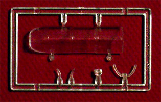
It simply means you have to take care when working with the plastic and may have to do a little finer sanding after a primer has been applied. And while I talking about this, that primer should contain a fair amount of lacquer thinner to help seal that skin to the rest of the plastic.
Included with all these gray plastic trees is a small tree of clear parts. This tree is most disappointing in that there is only provision for a closed canopy. With the level of detail inside the model it would only seem logical that the canopy be positioned open so it could be seen. The canopy does have nice raised frame detail and is clear enough right off the sprue. Once dipped in some Future it is crystal clear. We also get a reflector gun-sight with mounting bar, landing light lens and wingtip marker lights. The box contains 143 parts done in soft light gray plastic, 24 of these will not be used at all and 48 of them are devoted to the crew and support equipment. The clear tree contains five pieces so we have a total of 148 pieces in the box, of which only 71 will be used for the aircraft itself.
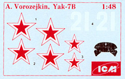
Decals and Instructions
The instructions for the kit consist of a large six panel foldout. The cover contains a history of Major Arsenji Vorozejkin and absolutely no historical background on the aircraft. A parts map follows this and six exploded view construction steps with part number identification and basic color code call-outs. One and a half panels are used for assembly instructions for the crew figures and the support equipment and the last panel contains an extensive paint code chart. All exterior painting instructions and decal placement instructions are on the backside of the box, this is common with ICM kit and does give you at least a full color painting instruction to look at.
No ICM kit contains a lot of decals and this one is even more brief than most because it only gives decals for one aircraft. The decals are thin with good print registry but are a little light on the color density. This means if they are placed over a camouflage pattern it will show through the decal. I would suggest to pre-paint the area the decal will rest in, double the decals if you some in your spares box or look for aftermarket decals with better color density. Basic aircraft markings are provided with no service stencils or warning placards. There is a decal for the instrument panel if you are not into painting the details yourself.
Conclusions
Russian aircraft of this period have largely been ignored by mainstream producers for a very long time. It�s great that ICM came out with a full line of Yaks and the MiG-3 aircraft to supplement our collections. The basics of the model are good with nice exterior detail, good interior detail and excellent engines. The instructions will get you through to completion with no head scratching. The parts need a good wash prior to construction and need to be handled with care when sanding. The decals are usually a disappointment with ICM but are also inconsistent. Some kits have good decals while others of the exact same aircraft have crappy decals � it�s just a roll of the dice in this department. None of these shortcomings are beyond the skills of the average modeler. Ultimately it is a historically significant aircraft and there really should be at least one in any comprehensive collection. Considering all these items along with the low, low price I have to give the kit a fair to good recommendation.
Construction
As with any model of standard design construction begins with the fuselage interior. On this kit we have the added feature of the engine. For this build I will be fitting the hood closed and will not include the engine inside the fuselage. I will build it and use it as a diorama piece. Interior areas of the cockpit are painted light gray and details are painted per the kit instructions. I elected to paint the instrument panel and use a few Reheat decals for the instrument faces. The seat was enhanced with some PE seatbelts from Eduard. All these pieces fit well and the interior went together quite nicely. The basic engine components were also painted and assembled. This was set aside for additional detailing later on. The exhaust shrouds are mounted and secured at the correct depth then the fuselage is closed up with the hood glued in place. Using a welders tip drill I opened up the gun ports in the hood.
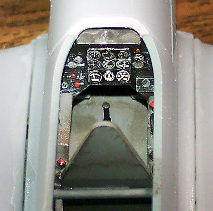 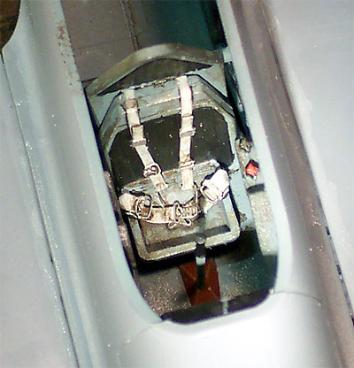
The interiors of the landing gear bays and the landing gear struts were done with the same light gray as the cockpit interior. The wing panels were then assembled. So far everything lined up properly and other than cleaning off flash there have been no problems.
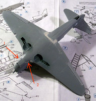
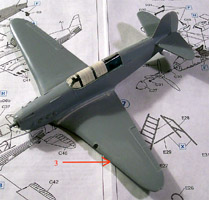
Now I attach the wings to the fuselage assembly. I have a slight misalignment at the rear of the wing to the fuselage that needs a little putty. I screwed up at this juncture, I should have installed the chin radiator first then the wing, putting the radiator in afterwards is difficult and the fit is not good. Would it have been better if the steps were reversed? Hard to say but again some putty is needed. In the picture to the left you can see arrows numbered 1 and 2 where there are fit issues. Also on the wing I had some plastic wanting to peel (see arrow 3 in picture to the right). I solved this problem with a brush stroke of Tenax 7R followed by a light sand. Both of these pictures can be clicked on to view larger images.
Wing roots were also puttied. All putty application was done with treatments of acetone based fingernail polish remover applied with a Q-tip to smooth out the repair and reduce the sanding needed. This is more than just being lazy; the plastic starts to peel just about anywhere you sand it. The canopy was dipped in Future then masked with small strips of masking tape and attached with a bead of Testors Clear Parts cement. Ailerons and rudder are separate pieces and I installed then slightly off the neutral position as if the controls and been pushed by the pilot as he or she exited the aircraft.
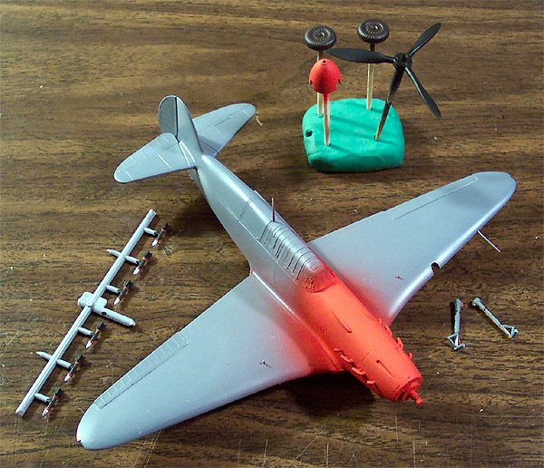
Accessory items such as the wheels, propeller and spinner hub were mounted on toothpick, stuck into a lump of modeling clay and airbrushed. The rocket rails were installed and here was another minor error on my part � I assembled the wings first then thought about drilling the mounting holes for the rail � oops! No big deal, I just held the model in front of a 100 watt light bulb, not so close as to melt the plastic but close enough to identify the mounting holes and drill them out. Now the entire model gets dusted with compressed air and then coated with Model Master gray primer cut 30% with lacquer thinner. While this dried I painted the rockets black with silver noses and red bands. I did a little work on the landing gear struts also. Using some medium fuse magnet wire I lay in some brake lines and secured them with thin strips of masking tape. The lines were painted light brown and the straps were done with Gunze-Sangyo burnt iron.
I bought this model for the ground crew and the support equipment, not for any great desire to model Major Vorozejkin�s aircraft and while researching Yak 7s I came across a different VVS scheme with a full red nose that appealed to me much more than the box art on this kit. I decided to model White 31 with a green on green scheme and a full red nose rather than the short red nose with gray on gray as the kit suggests. Now that I have settled on a scheme I paint the nose flat red and mask it off. The underside is done with Tamiya Sky Gray and also masked off. The curved area below the stabilizer was made by tracing a quarter with a razor knife on a piece of masking tape. Now for some green.
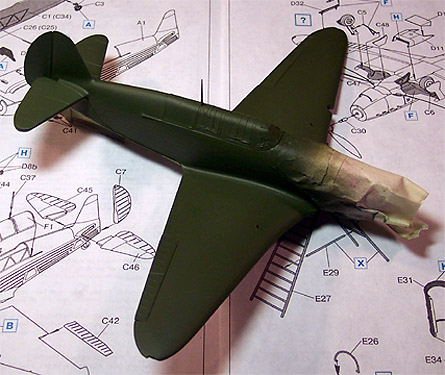 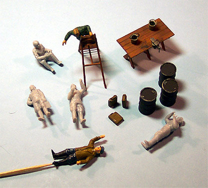
I do not have a good color reference chart to work off of so am trying to visually match colors for my greens. The best I can do is RLM 82 for my light green and RLM 70 black green for the darker color. Above left is the model with the RLM 82 and above right are the crew and support equipment in progress. So far I have about a week invested in this build. Below I have removed the masks and installed the landing gear.
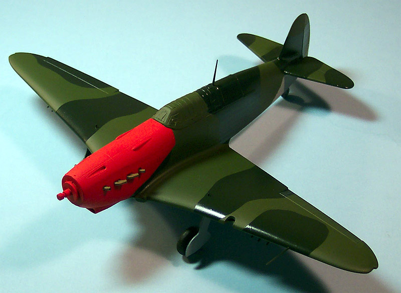
10/18/04
This build is progressing rapidly. Now that the basic paint is done I paint the rocket rails Burnt Iron and install the rockets. The antenna is fashioned from some .04 invisible thread colored with a black magic marker. I installed the lower aerial first starting at the mast and pulling it gently to the fin and attaching it with a spot of super-glue. The upper aerial was installed from the fin to the mask. This was done so that both aerials remain taunt once completed. The propeller gets installed and there is a slight problem here. The kit has a �C� ring that is intended to hold the prop in place but it does not fit well. When I tried to force it the ring split in half. I held the two pieces in place with tweezers and spotted it with some Tenax 7R, this is a delicate moment because I do not want any glue wicking back to the prop and the procedure is successful. The prop is now held in place but turns easily.
I have good momentum going on this and head for the paint room again. I apply some Tamiya X-19 smoke along the fuselage sides and around the cannon openings for staining then coat the model with Future floor polish. Once this has dried overnight I apply the decals. I used some old Russian stars as a base decal then laid the kit decals overtop them so that the camouflage pattern would not show through. The White 31 came from this old set of decals as well. The kit decals did not want to lift easily from the backing paper and needed a little help with a paintbrush to come off. All the decals were treated with Micro-Sol setting solution and behaved well with this. After an evening of dry time I applied a sludge wash on the panel lines, a little bit of silver paint chipping on the prop edges and wing leading edges and coat the model with Polly Scale clear flat. A little ground pastel chalk is brushed over the X-19 Smoke stains and as a famous TV chef is prone to say �BAM�! One complete Yak 7B in about ten evenings of modeling, total hours on this bird, around 12. In the following pictures the second Yak 7B is from a build I did a few years ago with the engine open. Note the wiring harness is scratch built and so are the red cables. The upper frame structure has to be removed if you want to install the hood.
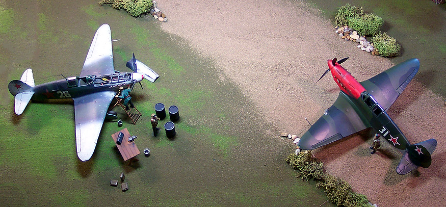
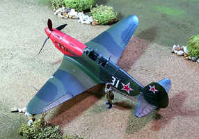
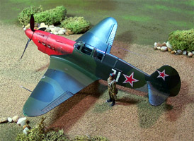
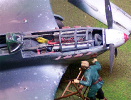
You can click on these smaller pictures to view larger images
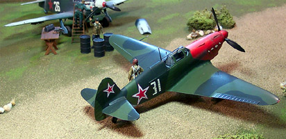
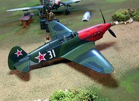


{kind=link}
{kind=link}
{kind=link}
{kind=link}
{kind=link}
{kind=link}
{kind=link}